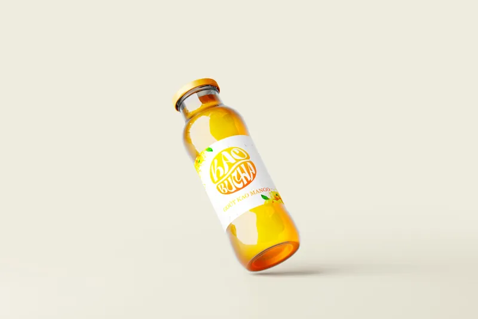
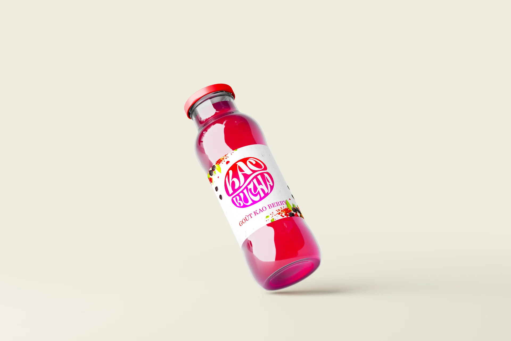
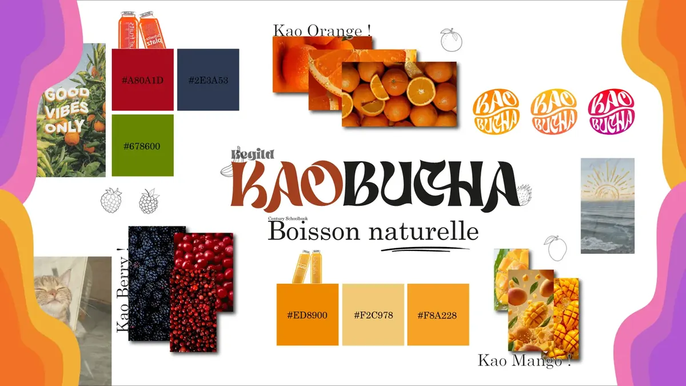
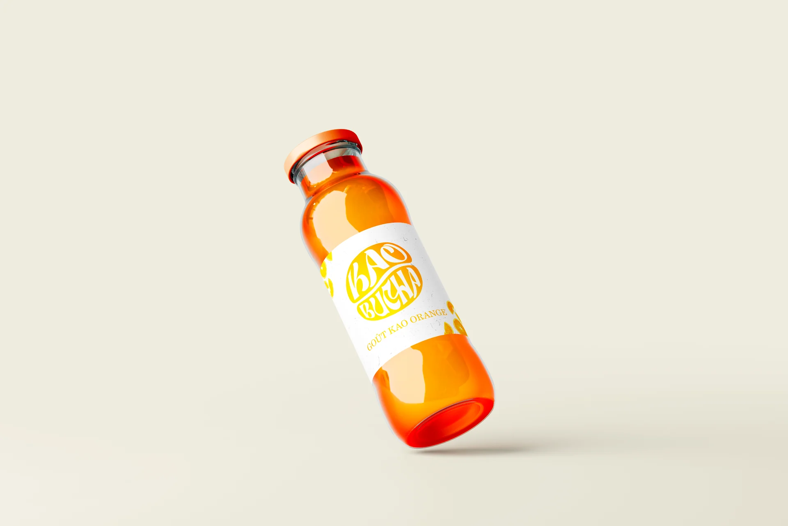
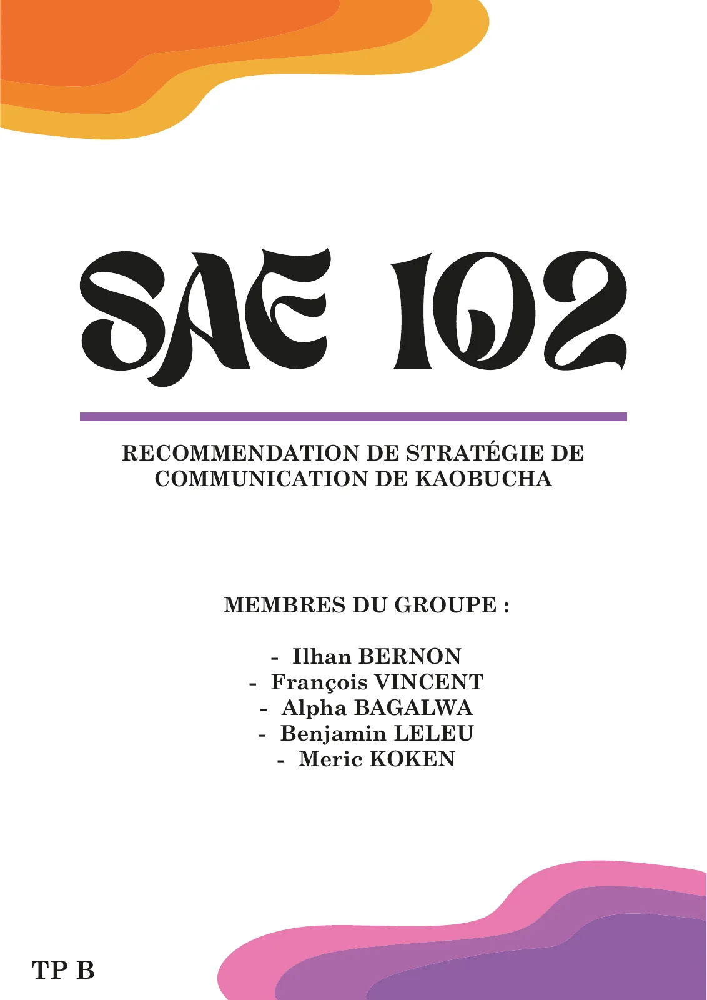
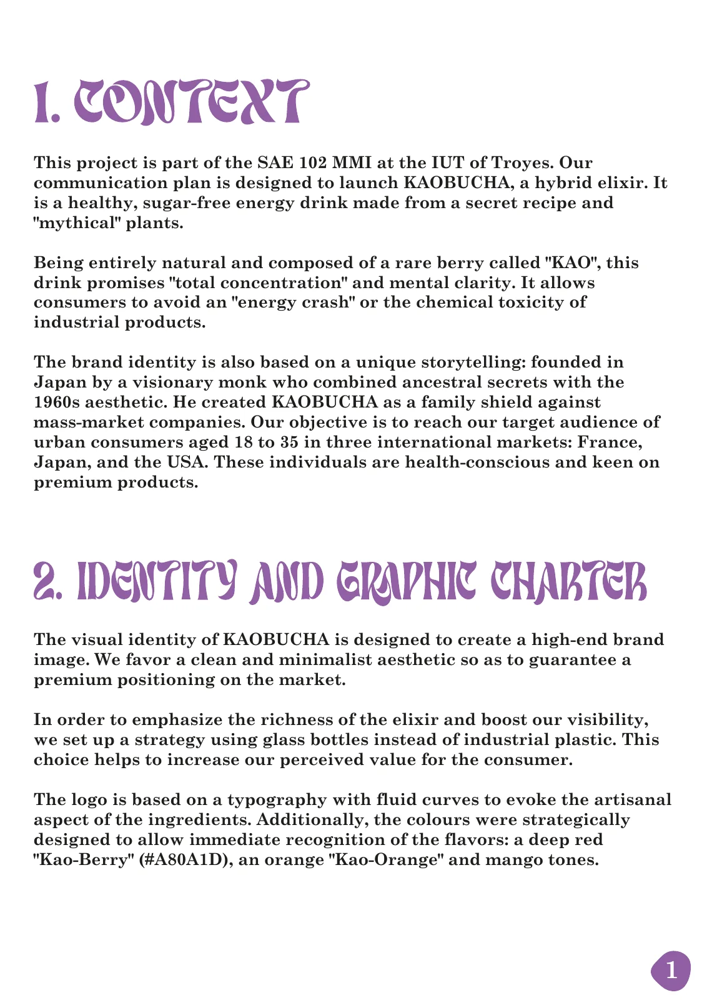

Projet 01 / Identité de marque
Kaobucha.
Naturellement énergique.
Créer l’identité d’une boisson naturelle : le nom, les packagings et une campagne pensée pour trois marchés.




Identité, packaging & réseaux sociaux
- Mon rôle
- Branding & design
- Cadre
- SAE 1.02 · BUT MMI
- Période
- 2025–2026 · Semestre 1
- Outils
- Photoshop · Illustrator
01 / Le brief
Tout part
d’une boisson.
Pour la SAE 1.02, il fallait inventer une marque de boisson énergisante naturelle et sans alcool. Son nom : Kaobucha. Nous avons construit son univers visuel, ses packagings et sa communication.
Le brief couvrait la France, le Japon et les États-Unis. Il fallait garder une marque reconnaissable tout en adaptant les publications à ces trois publics.
Une identité qui reste la même, même quand elle change de pays.
02 / La direction
Des fruits, des couleurs,
du caractère.
Une direction naturelle, fraîche et organique : le fruit donne la couleur, la typographie donne le ton.

03 / Le packaging
Trois saveurs.
Une famille.
Le logo fait le lien entre les déclinaisons. Les couleurs permettent de repérer chaque saveur.


04 / Les repères
Le projet, en quelques faits.
03
Saveurs · Mango, Berry, Orange
03
Marchés · France, Japon, États-Unis
S1
SAE 1.02 · BUT MMI · 2025–2026
Ps / Ai
Photoshop & Illustrator
05 / Les déclinaisons
La marque
passe les frontières.
Des personas et des publications propres à chaque marché, dans le même univers de marque.


06 / Les fichiers
À ouvrir.
À garder.
Le dossier rassemble la conception de la marque et sa stratégie marketing. La planche visuelle est aussi disponible séparément.

Voir un aperçu du dossier




Les deux premières pages sur 11. Ouvrir le dossier complet (PDF, nouvel onglet)